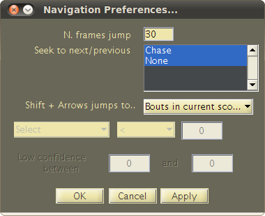

JAABA: Navigating within and between Videos
Within the main JAABA interface, there are several methods for navigating in time and space within a video, between different animals in the same video, and between different videos. This will allow you to easily find new, informative frames to label and evaluate the performance of the current classifier.

JAABA Interface Screenshot
- The Left and Right arrow keys let you navigate forward or backward
by a single frame.
- The Down and Up arrow keys move the video forward and
backward by 30 frames (the number of frames can be modified in the Navigation Preferences).
- The slider below the Movie Previewer can also be used to change the current video frame.
- Clicking on the selected animal's plotted trajectory will move the video to the selected frame.
- The Play button below the Movie Previewer plays the movie. You can set the movie playback speed using View -> Preview Options..
- The current frame number is shown in the text box next to the play button. Editing this textbox will change the current frame.
- Clicking on the timelines will move the current frame to the selected frame. The current frame is indicated in the timelines below the Movie Previewer by a vertical yellow line.
- Pushing Ctrl-Right and Ctrl-Left (Command-Right and Command-Left on the Mac) navigates to the start or end of the next or previous manually labeled bout.
- Pushing Shift-Right and Shift-Left lets you navigate to configurable frames of interest for the currently selected fly. See Navigation Preferences below.
There are two ways to switch which animal is currently being annotated.
- For animals in the same video, you can double-click that animal's plotted position to switch to that animal.
- You can switch to animals in the same or different videos using the Go -> Switch Target menu. This brings up a table that gives detailed information about each animal, including how many frames of each category have been labeled and predicted for the animal. To switch animals in this interface, select any cell in the row of that animal and click Switch to Target.

- The Zoom-in, Zoom-out, and Pan buttons above the Movie Previewer can be used to manually change the field of view.
- To keep the animal being annotated within the Movie Previewer while changing the field of view as little as possible, select View -> Zoom -> Keep target in view . Recommended.
- To keep the animal being annotated at the center of the Movie Previewer, select View -> Zoom -> Center axes on current target.
- To keep the field of view static, select View -> Zoom -> Static View. In this mode, the animal being annotated may go outside the field of view.
Pushing Shift-Right and Shift-Left lets you navigate to configurable frames of interest for the currently selected fly. You can configure which frames it navigates to using the Navigation Preferences dialog (menu item Go -> Navigation Preferences). Options include:
- Bouts in current scores: Navigate to the starts and ends of bouts in the current classifier's predictions.
- Errors in current scores: Navigate to errors in the current classifier's predictions (frames in which the current classifier's predictions do not match the labels).
- Errors in validated scores: Navigate to cross validation errors (frames in which the cross-validation prediction does not match the manual labels).
- Low Confidence: Navigate to frames in which the confidence of the classifier in its predictions is low. The thresholds for low confidence can be set by selecting menu item Classifier -> Set Confidence Thresholds. The predictions for frames that have low confidence are not shown in the automatic predictions timeline.
- Thresholds on perframe: Navigate to frames in which a selected per-frame feature is above or below a selected threshold. You can select the per-frame feature and threshold within the Navigation Preferences dialog.
Within the Navigation Preferences dialog you can also select how many frames are jumped (N. frames jump) when using the Up and Down arrow keys.
You can select which behaviors to jump to using the Shift and Control/Command modifier keys. For example, if you select only Chase in Seek to next/previous then Control will jump just to bouts of chasing.

Navigation Preferences Dialog Screenshot